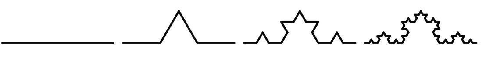
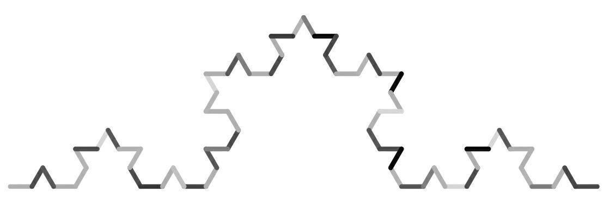

为了使整个过程公平，前后交换是最基本的方法。当两位运动员不能同时进行比赛，或者需要交替地完成比赛、交替地使用一件物品、交替地选择时，人们通常会通过简单交换即ABAB来使整个过程公平。这条原则基本上是公认的公平的范本。但其实这种顺序导致后开始的一方一直处于劣势，还容易在一开始就输掉。
但为什么数学界始终无法成功地推翻这个不公平的理论呢？
在大多数情况下，简单的前后交换都是不公平的。点球大战的例子就已经展示了利用“图厄－摩尔斯数列”来进行点球大战比简单交替进行要公平得多。两位运动员之间不应简单地前后交换，而是应该多次交换前面进行的整个顺序。这一方法几乎对生活中的所有情况都是适用的。
我们假设现有两人，他们分别是0和1，需要借助简单交换来分配8块蛋糕，8块蛋糕的重量分别为100g、200g、300g……800g。第一个挑选蛋糕的人由随机抽签来决定，我们假设0胜利，可以第一个挑选蛋糕，之后严格按照01 01 01 01这个顺序进行挑选。
0和1两个人都会拿剩下的蛋糕中最大的一块，于是0最终得到了800g+600g+400g+200g=2000g的蛋糕，1只得到了700g+500g+300g+100g=1600g的蛋糕。因为第一个选择的人在每一小轮中都能获得比第二个选择的人多100g的蛋糕，所以这种方式其实非常不公平。
如果按照“图厄－摩尔斯数列”的顺序01 10 10 01进行选择，就能使两位参与者最终获得相等重量的蛋糕。
“图厄－摩尔斯数列”可以通过0和1的有序变换得来。如果第一位为0，第二位为1，之后每一次变换都是把0换成01，把1换成10，渐渐地我们就会得到一个无穷的数列。
0
01
01 10
01 10 10 01
01 10 10 01 10 01 01 10
……
“图厄－摩尔斯数列”不光有着丰富多彩的应用方式，还具有一些神奇的特性，比如自相似性。数列的自相似性指的是数列可以经过一些操作重新变成原数列，比如上述数列从1开始每隔一个数擦除一个，最后还会得到一个完全相同的“图厄－摩尔斯数列”。
自相似性是分形理论的一个重要特征——某一物体或某一结构的部分与整体有着极强的相似性。这种自相似性同样也可以通过图象的形式表达：初始状态是一段单独的横线，我们称之为K(0)。之后每个自然数n对应的K(n)都可推导出之后的数K(n+1)。在图象上如此表示：在每一条横线中间1/3的部分向上画一个等边三角形，去除三角形的底边，再对变换后的图形的每一条边进行如上操作。这个操作可以无数次地进行，最终产生了所谓的“科赫曲线”。
下图展示了“科赫曲线”从K(0)到K(1)到K(2)到K(3)的构成方法。当然，人们还可以继续画下去。

但是这与“图厄－摩尔斯数列”有什么关系呢？
答案其实非常简单：我们可以先画一根短横线，再根据“图厄－摩尔斯数列”中的数改变横线的方向——当后一个数与前一个数不相同时，画一条与前一条横线夹角为120°（向右）的相等长度的横线；当后一个数与前一个数相同的时候，画一条与前一条横线夹角为60°（向左）的等长横线，这样我们就能得到K(n)时的曲线了。

也许这是在世界范围内推动“图厄－摩尔斯公平公式”普及的不错的标志，这样一来，无论是足球比赛中的点球大战，还是网球比赛中的抢七决胜局，或者其他比赛，都会更加公平。
部分网球比赛中的抢七决胜局已经采用了“01 10 01 10 01”这种比赛顺序。这是“图厄－摩尔斯数列”推广的重要进程，但是对于全世界的比赛公平来说还远远不够。简单交换已经是过去的规则了，在今天我们追求的是“图厄－摩尔斯数列”带来的公平！